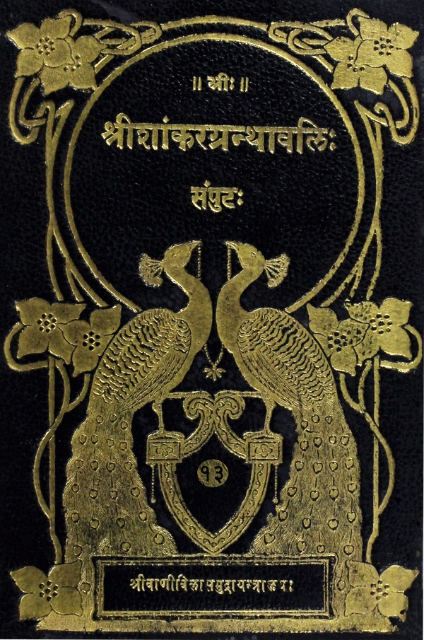

श्रीशांकरग्रन्थावलिः
संपुटः १ - २०
Home
About
Concluding Note
T. K. Balasubramaniam
Superhuman efforts of a savant
Prema Nandakumar
Views on the Sri Vani Vilas Press
His (Sri TKB’s) aim
Volumes
विष्णुसहस्रनामस्तोत्रभाष्यम्
भीष्माचार्यं प्रति युधिष्ठिरेण कृताः षट् प्रश्नाः
भीष्माचार्यस्य उत्तरम्
ध्यानस्तुतिनमस्काराख्येषु क्रमेण मानसवाचिककायिकेषु अर्चनेषु स्तुतिलक्षणस्यार्चनस्य सर्वधर्माभ्यधिकत्वम्
विष्णोः परमपवित्रत्वसमर्थनम्
देवस्य विष्णोरेकत्वसमर्थनम्
सिद्धरूपेऽप्यात्मनि वेदस्य प्रामाण्यम्
अन्यपराणामपि मन्त्रार्थवादानां प्रामाण्यम्
आत्मज्ञानस्य श्रद्धेयता
सहस्रनामजपानुरूपं मानसस्नानम्
गुणक्रियादिप्रवृत्तिनिमित्तकानामपि शब्दानां परमपुरुषाभिधायकत्वम्
आदित्यादिशब्दानां प्रसिद्धार्थपराणामपि विष्णुस्तुतित्वम्
विष्ण्वादिशब्दानां श्रीपतिमाधवादिशब्दानां च पौनरुक्त्यपरिहारः
सहस्रनामसु दृष्टस्य लिङ्गत्रयस्य उपपत्तिः
प्रतिनामनिर्वचनोपक्रमः
विश्वशब्दस्य प्रणवपरत्वम्, तेन ब्रह्माङ्गिधानफलं च
हिंसादिरहितस्य वैष्णवस्य विष्णुस्तुतिनमस्कारादौ अधिकारः
स्तुतिनमस्कारादेः श्रद्धापूर्वकमनुष्ठेयत्वम्
आत्मानं विष्णुं ध्यायतः स्तुतिनमस्कारदौ अधिकारः
वासुदेवनिन्दावद्देशवासनिषेधः
श्रद्धाभक्त्यपुरस्कृतस्यापि विष्णुनामसंकीर्तनस्य दुरितहरत्वम्
स्मरणध्यानयोर्नामसंकीर्तनेऽन्तर्भावः
विश्वनामव्याख्यानोपसंहारः
विष्णुनामसंकीर्तनस्य सम्यग्ज्ञानहेतुत्वम्
विष्ण्वादिनामनिर्वचनम्
नामकीर्तनश्रवणादिफलम्
जपकर्मणो ज्ञानद्वारा मोक्षहेतुत्वम्
मोक्षस्य ज्ञानैकप्राप्यत्वम्
शूद्रस्य श्रवणमात्रेऽधिकारः
सनत्सुजातीयभाष्यम्
प्रथमोऽध्यायः
संग्रहेण वेदान्तमर्यादाप्रदर्शनम्
औपनिषदब्रह्मात्मतत्त्वज्ञाने शूद्रस्यानधिकारः
सनत्सुजातं प्रति धृतराष्ट्रकृतो मृत्युसदसद्भावप्रश्नः
मृत्योरभावे मतभेद इत्यादि सनत्सुजातस्योत्तरम्
प्रमाद एव मृत्युः संसारहेतुत्वात्
यमस्य न साक्षान्मृत्युत्वम्, किं तु प्रमादस्यैवेति संक्षेपतः सर्वशास्त्रार्थप्रदर्शनम्
प्रमादस्य अहंकारादिकार्यद्वारेण बन्धहेतुत्वम्
ज्ञानिनो मृत्युभयाभावः
पुण्यलोकसाधनत्वेनाम्नातानां कर्मणां विद्वदननुष्ठेयत्वे शङ्का
तेषामविद्वद्विषयत्वेन शङ्कापरिहारः
ईश्वरस्य जगत्सर्गादौ नियोजकप्रयोजनादिप्रश्नः
तत्रोत्तरम्
ईश्वरस्य मायॊपाधिकजगत्कर्तृत्वनिरूपणम्
धर्माधर्मयोः कस्येतरप्रतिघातकत्वमिति प्रश्नः
तत्रोत्तरम्
अधिकारिभेदेन धर्मस्य स्वर्गादिफलसाधनत्वं ज्ञानसाधनत्वं च
ज्ञानिचर्या
मानमौनयोर्विभिन्नविषयकत्वम्
सत्यार्जवादीनां ब्रह्मलक्ष्मीप्रवेशद्वारता
द्वितीयोऽध्यायः
मौनविषयकप्रश्नोत्तरे
वेदाध्यायिनोऽपि क्रियमाणपापलेपावश्यिकत्वम्
तर्हि वेदानां नैरर्थक्यमिति आक्षेपः तत्परिहारश्च
विद्वदविद्वदपेक्षया कर्मणां फलवैषम्यम्
निष्कल्मषस्य तपसः केवलत्वं अतिसमृद्धत्वं च
क्रोधादिद्वादशदोषनिरूपणम्
संभोगसंविदादिसप्तनृशंसनिरूपणम्
ज्ञानादयो द्वादश गुणाः
अनृतादयोऽष्टादश दमदोषाः
सत्यादयोऽष्टादश मददोषाः
त्यागषट्कम्
अप्रमादगुणाः अष्टौ सत्यादयः
सत्यस्य प्राधान्यम्
सत्यनिष्ठ एव मुख्यो ब्राह्मणः
ब्रह्मणो वेदप्रतिपाद्यत्वम्
ब्रह्मविद एव मुनित्वनिरूपणम्
स एव वैयाकरणः सर्वाविच्च
तृतीयोऽध्यायः
ब्रह्मविद्याया ब्रह्मचर्येणैव लभ्यता
ब्रह्मचर्यविवरणम्
आचार्यमहिमा
ब्रह्मणो ज्ञानैकप्राप्यत्वम्
ब्रह्मस्वरूपम्
चतुर्थोऽध्यायः
ब्रह्मणो योगिदृश्यं रूपम्
तादृशं ब्रह्म पश्यतोऽमृतत्वम्
तादृशब्रह्मविषये स्वानुभवप्रदर्शनम् सनत्सुजातेन

विष्णुसहस्रनामस्तोत्रभाष्यम् & सनत्सुजातीयभाष्यम्
(Vishnusahasranama Bhashya & Sanathsujatiya Bhashya)